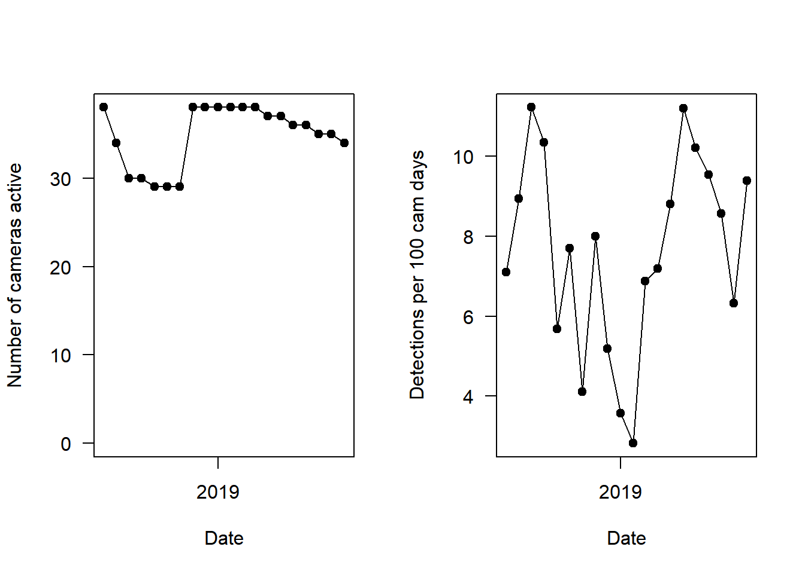
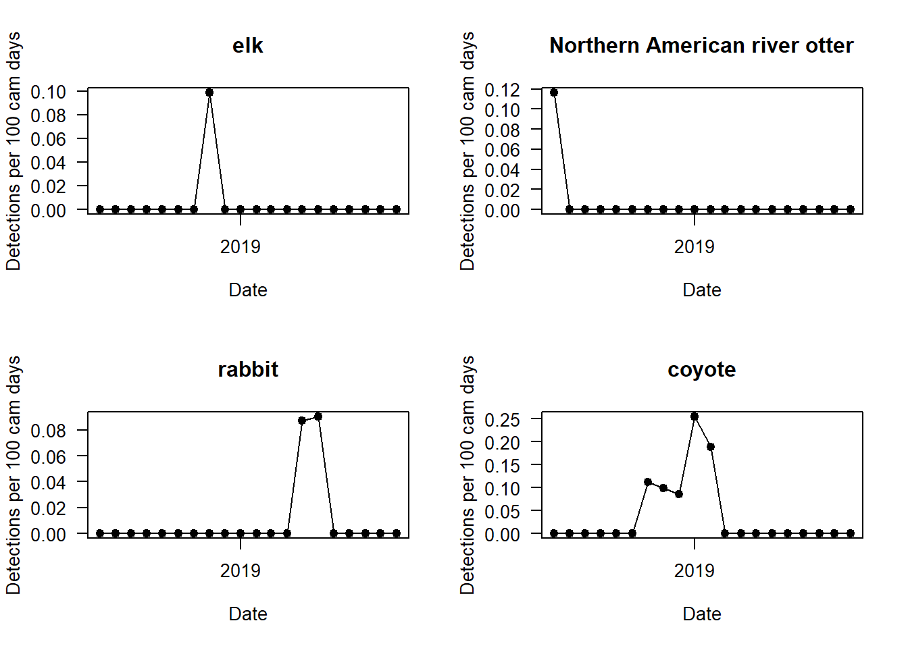
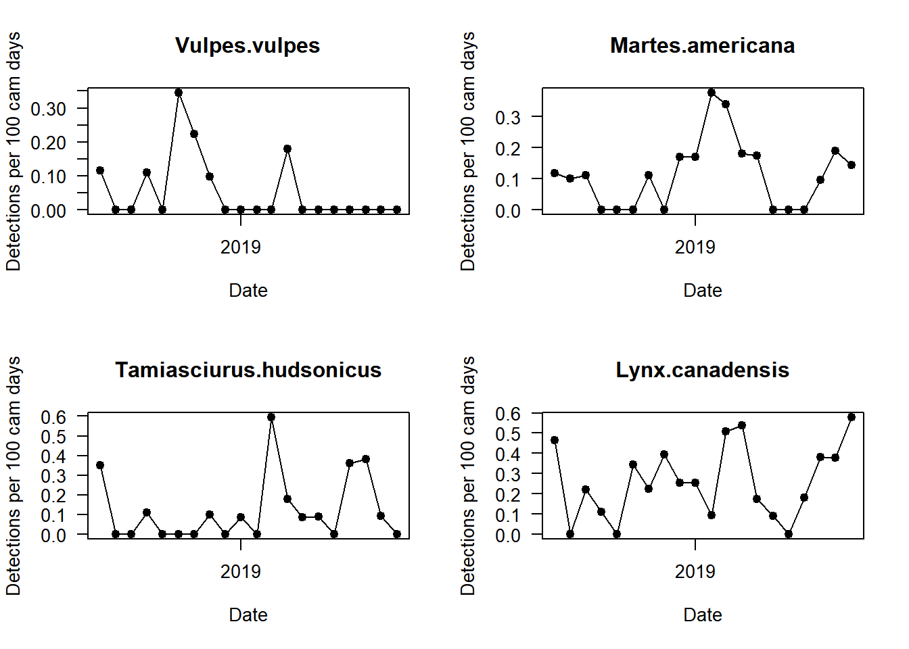
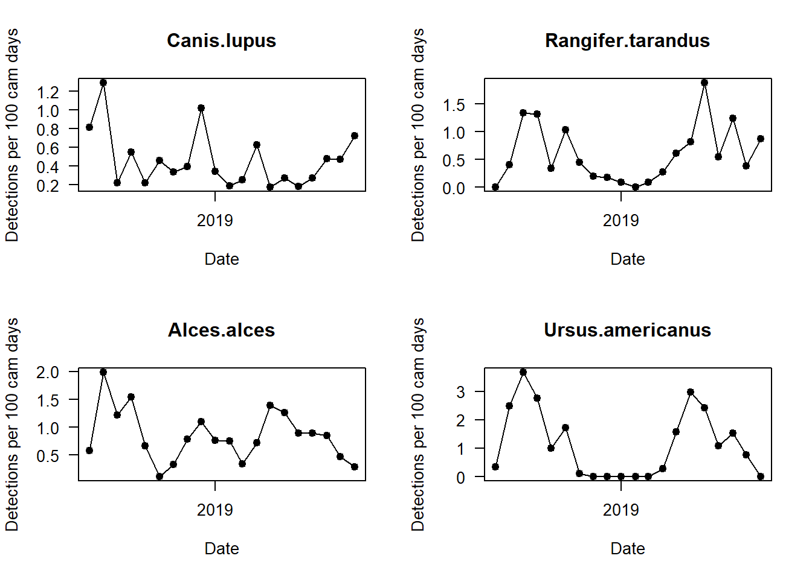
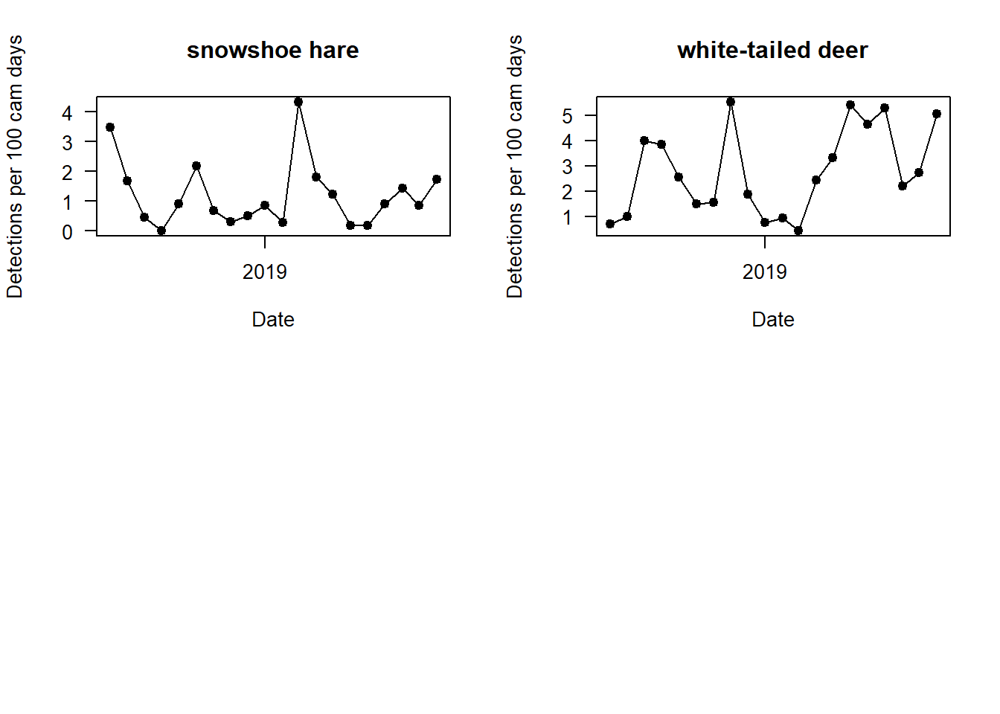
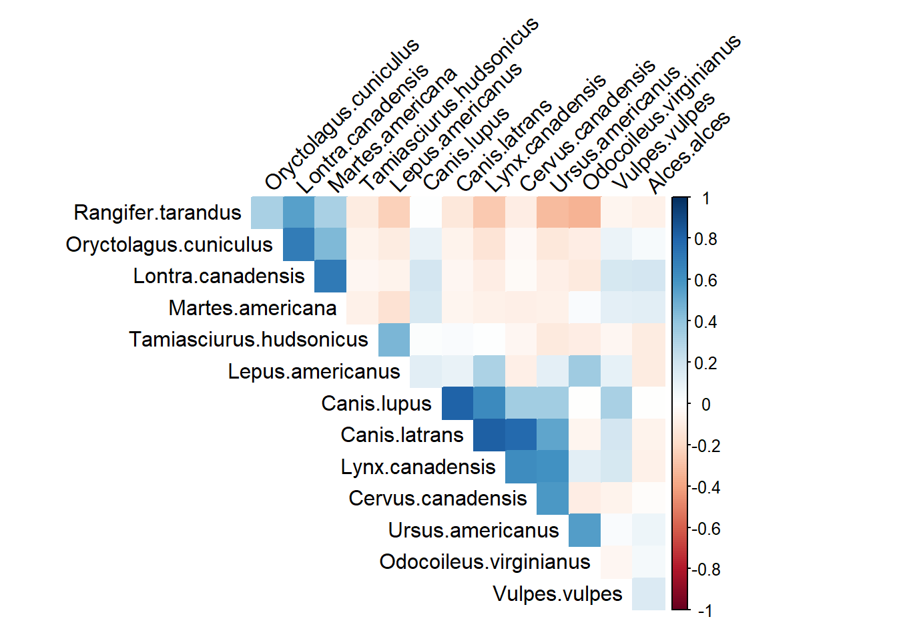
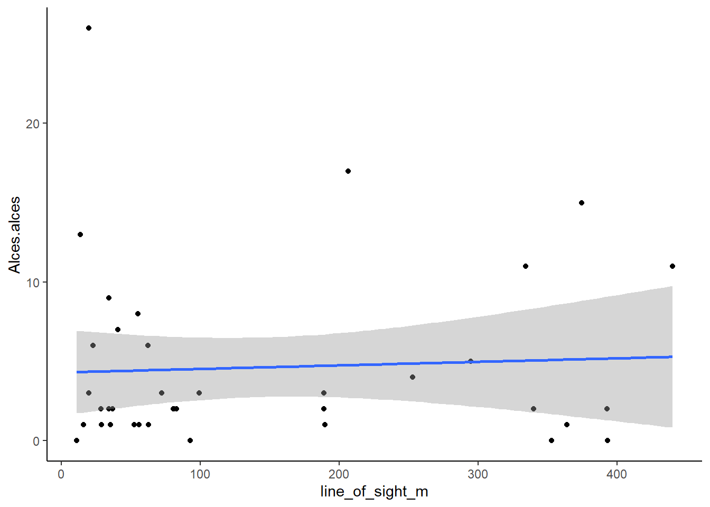
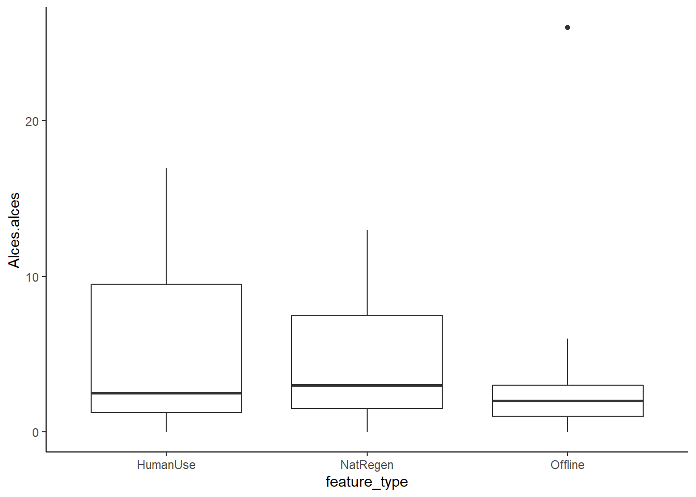

Chapter 8 Analysis data exploration
Now things start to get really interesting - we are getting closer to analyzing our data. Before we get into building any models however, we must thoroughly explore our data. We want to ask questions like?
- How many species did we detect?
- Which are the most common?
- Where did we detect them?
- When did we detect them?
- How do species detections relate to our covariates?
In the error checking section we focused our ‘data exploration’ on figures which would help us find issues with our data, now we want to shift gears and create plots which actually tell us about patterns in our data.
To reflect the change from error check to patterns, all of the datasets we use will now be coming out of the data/processed_data/ folder.
Create a new .R script
Call it 03_example_exploration.R.
Load the required packages
# Check you have them and load them
list.of.packages <- c("kableExtra", "tidyr", "leaflet", "dplyr", "viridis", "corrplot", "lubridate", "plotly")
new.packages <- list.of.packages[!(list.of.packages %in% installed.packages()[,"Package"])]
if(length(new.packages)) install.packages(new.packages)
lapply(list.of.packages, require, character.only = TRUE)8.1 Final locations plot
So lets read in the camera_locations.csv and plot the final survey locations in leaflet. We repeat this as we may have filtered out some stations in the error checking section - for example if they failed to collect any useful data:
locs <- read.csv("data/processed_data/AlgarRestorationProject_camera_locations_and_covariates.csv")
# If you want to color by a category do it here:
category <- "feature_type"
# First lets choose a category to color
locs[,category] <- factor(locs[,category])
col.cat <- turbo(length(levels(locs[,category])))
# Add it to the dataframe
locs$colours <- col.cat[locs[,category]]
m <- leaflet() %>%
# Add a satellite image layer
addProviderTiles(providers$Esri.WorldImagery, group="Satellite") %>%
addProviderTiles(providers$Esri.WorldTopoMap, group="Base") %>%
addCircleMarkers(lng=locs$longitude, lat=locs$latitude,
# Color the markers depending on the 'feature type'
color=locs$colours,
# Add a popup of the deployment code
popup=paste(locs$placename, locs[,category])) %>%
# Add a legend explaining what is going on
addLegend("bottomleft", colors = col.cat, labels = levels(locs[,category]),
title = category,
labFormat = labelFormat(prefix = "$"),
opacity = 1
) %>%
# add a layer control box to toggle between the layers
addLayersControl(
baseGroups = c("Satellite", "Base"),
options = layersControlOptions(collapsed = FALSE)
)
m8.2 Independent detections summary
When you are writing papers or reports based on camera data, it is useful to have a capture summary table in the main text or as an appendix. We will use the species list we created to append summary information to:
# Also read in the species list
sp_summary <- read.csv("data/processed_data/AlgarRestorationProject_species_list.csv", header=T)
# Import the ...total_observations.csv file
total_obs <- read.csv("data/processed_data/AlgarRestorationProject_30min_independent_total_observations.csv", header=T)The format of the output tables is what we would call ‘wide’ format - we have multiple species observation on the same row.
| placename | days | Alces.alces | Canis.latrans | Canis.lupus | Cervus.canadensis | Lepus.americanus | Lontra.canadensis | Lynx.canadensis | Martes.americana | Odocoileus.virginianus | Oryctolagus.cuniculus | Rangifer.tarandus | Tamiasciurus.hudsonicus | Ursus.americanus | Vulpes.vulpes |
|---|---|---|---|---|---|---|---|---|---|---|---|---|---|---|---|
| ALG027 | 358 | 4 | 4 | 13 | 1 | 0 | 0 | 10 | 0 | 3 | 0 | 0 | 0 | 32 | 0 |
| ALG029 | 593 | 17 | 0 | 2 | 0 | 0 | 0 | 1 | 0 | 35 | 0 | 0 | 0 | 9 | 0 |
| ALG031 | 593 | 11 | 0 | 8 | 0 | 1 | 1 | 0 | 6 | 1 | 1 | 21 | 0 | 2 | 1 |
| ALG032 | 592 | 2 | 0 | 0 | 0 | 0 | 0 | 1 | 0 | 2 | 0 | 5 | 0 | 0 | 0 |
| ALG035 | 594 | 11 | 0 | 2 | 0 | 7 | 0 | 1 | 0 | 1 | 0 | 6 | 3 | 2 | 0 |
| ALG036 | 417 | 1 | 0 | 0 | 0 | 42 | 0 | 1 | 0 | 5 | 0 | 0 | 15 | 0 | 0 |
| ALG037 | 592 | 2 | 0 | 0 | 0 | 0 | 0 | 0 | 0 | 0 | 0 | 3 | 0 | 2 | 0 |
| ALG038 | 593 | 0 | 0 | 0 | 0 | 0 | 0 | 0 | 1 | 0 | 0 | 12 | 0 | 1 | 0 |
| ALG039 | 591 | 2 | 0 | 6 | 0 | 0 | 0 | 0 | 0 | 0 | 0 | 5 | 0 | 3 | 0 |
| ALG043 | 392 | 6 | 0 | 0 | 0 | 13 | 0 | 0 | 0 | 21 | 0 | 0 | 0 | 2 | 0 |
| ALG044 | 392 | 15 | 0 | 3 | 0 | 2 | 0 | 0 | 1 | 10 | 0 | 0 | 0 | 7 | 2 |
| ALG045 | 418 | 5 | 0 | 5 | 0 | 3 | 0 | 4 | 3 | 0 | 0 | 1 | 0 | 6 | 0 |
| ALG046 | 592 | 9 | 0 | 0 | 0 | 14 | 0 | 1 | 0 | 18 | 0 | 0 | 0 | 0 | 1 |
| ALG047 | 507 | 1 | 1 | 13 | 0 | 1 | 0 | 0 | 0 | 15 | 0 | 5 | 1 | 9 | 0 |
| ALG048 | 593 | 0 | 0 | 2 | 0 | 0 | 0 | 1 | 1 | 1 | 0 | 7 | 0 | 4 | 0 |
| ALG049 | 341 | 2 | 0 | 0 | 0 | 0 | 0 | 0 | 1 | 14 | 0 | 0 | 4 | 10 | 0 |
| ALG052 | 590 | 13 | 0 | 3 | 0 | 9 | 0 | 1 | 1 | 65 | 0 | 1 | 0 | 17 | 0 |
| ALG053 | 592 | 3 | 0 | 0 | 0 | 0 | 0 | 1 | 0 | 0 | 0 | 1 | 0 | 2 | 3 |
| ALG054 | 595 | 1 | 0 | 1 | 0 | 25 | 0 | 3 | 0 | 28 | 0 | 0 | 0 | 2 | 0 |
| ALG055 | 592 | 3 | 3 | 26 | 0 | 29 | 0 | 9 | 1 | 19 | 0 | 0 | 2 | 10 | 2 |
| ALG056 | 595 | 8 | 0 | 0 | 0 | 0 | 0 | 1 | 0 | 6 | 0 | 0 | 0 | 2 | 0 |
| ALG057 | 405 | 0 | 0 | 1 | 0 | 0 | 0 | 0 | 0 | 13 | 1 | 0 | 0 | 2 | 0 |
| ALG058 | 595 | 2 | 0 | 0 | 0 | 58 | 0 | 3 | 0 | 51 | 0 | 1 | 0 | 11 | 0 |
| ALG059 | 465 | 7 | 0 | 0 | 0 | 2 | 0 | 1 | 0 | 0 | 0 | 3 | 0 | 9 | 0 |
| ALG060 | 592 | 1 | 0 | 0 | 0 | 1 | 0 | 1 | 2 | 0 | 0 | 0 | 0 | 6 | 0 |
| ALG061 | 590 | 0 | 0 | 0 | 0 | 0 | 0 | 0 | 4 | 60 | 0 | 0 | 0 | 5 | 0 |
| ALG062 | 592 | 1 | 0 | 4 | 0 | 4 | 0 | 1 | 0 | 48 | 0 | 0 | 0 | 16 | 0 |
| ALG063 | 593 | 1 | 0 | 1 | 0 | 1 | 0 | 0 | 1 | 23 | 0 | 4 | 1 | 2 | 0 |
| ALG064 | 592 | 2 | 0 | 0 | 0 | 0 | 0 | 0 | 0 | 0 | 0 | 10 | 0 | 0 | 0 |
| ALG065 | 447 | 26 | 0 | 0 | 0 | 0 | 0 | 0 | 1 | 0 | 0 | 1 | 0 | 2 | 0 |
| ALG066 | 591 | 2 | 0 | 0 | 0 | 0 | 0 | 1 | 0 | 1 | 0 | 6 | 0 | 0 | 0 |
| ALG067 | 391 | 2 | 0 | 2 | 0 | 0 | 0 | 0 | 0 | 3 | 0 | 0 | 0 | 0 | 0 |
| ALG068 | 592 | 3 | 0 | 0 | 0 | 0 | 0 | 0 | 0 | 0 | 0 | 0 | 0 | 2 | 0 |
| ALG069 | 592 | 6 | 0 | 0 | 0 | 3 | 0 | 4 | 0 | 64 | 0 | 0 | 0 | 25 | 0 |
| ALG070 | 408 | 2 | 0 | 0 | 0 | 0 | 0 | 0 | 1 | 4 | 0 | 3 | 0 | 1 | 0 |
| ALG071 | 595 | 3 | 0 | 1 | 0 | 21 | 0 | 2 | 0 | 46 | 0 | 0 | 0 | 22 | 1 |
| ALG072 | 595 | 1 | 0 | 0 | 0 | 5 | 0 | 4 | 0 | 5 | 0 | 1 | 0 | 3 | 0 |
| ALG073 | 593 | 1 | 0 | 0 | 0 | 0 | 0 | 0 | 0 | 0 | 0 | 23 | 0 | 0 | 0 |
Sometimes, however, we might want a “longer” format where every row represents a unique species_site combination.
We can do this using the ‘pivot_longer’ function:
long_obs <- total_obs %>%
pivot_longer(cols=sp_summary$sp, # The columns we want to create into rows - species
names_to="sp", # What we what the number column to be called
values_to = "count") # Takes the values in the species columns and calls them `count`We now have a dataframe where each row is a unique species at a given location (e.g. ALG027) - a.k.a. long format!
| placename | days | sp | count |
|---|---|---|---|
| ALG027 | 358 | Alces.alces | 4 |
| ALG027 | 358 | Cervus.canadensis | 1 |
| ALG027 | 358 | Odocoileus.virginianus | 3 |
| ALG027 | 358 | Rangifer.tarandus | 0 |
| ALG027 | 358 | Canis.latrans | 4 |
| ALG027 | 358 | Canis.lupus | 13 |
| ALG027 | 358 | Vulpes.vulpes | 0 |
| ALG027 | 358 | Lynx.canadensis | 10 |
| ALG027 | 358 | Lontra.canadensis | 0 |
| ALG027 | 358 | Martes.americana | 0 |
| ALG027 | 358 | Ursus.americanus | 32 |
| ALG027 | 358 | Lepus.americanus | 0 |
| ALG027 | 358 | Oryctolagus.cuniculus | 0 |
| ALG027 | 358 | Tamiasciurus.hudsonicus | 0 |
| ALG029 | 593 | Alces.alces | 17 |
| ALG029 | 593 | Cervus.canadensis | 0 |
| ALG029 | 593 | Odocoileus.virginianus | 35 |
| ALG029 | 593 | Rangifer.tarandus | 0 |
| ALG029 | 593 | Canis.latrans | 0 |
| ALG029 | 593 | Canis.lupus | 2 |
| ALG029 | 593 | Vulpes.vulpes | 0 |
| ALG029 | 593 | Lynx.canadensis | 1 |
| ALG029 | 593 | Lontra.canadensis | 0 |
| ALG029 | 593 | Martes.americana | 0 |
| ALG029 | 593 | Ursus.americanus | 9 |
| ALG029 | 593 | Lepus.americanus | 0 |
| ALG029 | 593 | Oryctolagus.cuniculus | 0 |
| ALG029 | 593 | Tamiasciurus.hudsonicus | 0 |
| ALG031 | 593 | Alces.alces | 11 |
| ALG031 | 593 | Cervus.canadensis | 0 |
| ALG031 | 593 | Odocoileus.virginianus | 1 |
| ALG031 | 593 | Rangifer.tarandus | 21 |
| ALG031 | 593 | Canis.latrans | 0 |
| ALG031 | 593 | Canis.lupus | 8 |
| ALG031 | 593 | Vulpes.vulpes | 1 |
| ALG031 | 593 | Lynx.canadensis | 0 |
| ALG031 | 593 | Lontra.canadensis | 1 |
| ALG031 | 593 | Martes.americana | 6 |
| ALG031 | 593 | Ursus.americanus | 2 |
| ALG031 | 593 | Lepus.americanus | 1 |
| ALG031 | 593 | Oryctolagus.cuniculus | 1 |
| ALG031 | 593 | Tamiasciurus.hudsonicus | 0 |
| ALG032 | 592 | Alces.alces | 2 |
| ALG032 | 592 | Cervus.canadensis | 0 |
| ALG032 | 592 | Odocoileus.virginianus | 2 |
| ALG032 | 592 | Rangifer.tarandus | 5 |
| ALG032 | 592 | Canis.latrans | 0 |
| ALG032 | 592 | Canis.lupus | 0 |
| ALG032 | 592 | Vulpes.vulpes | 0 |
| ALG032 | 592 | Lynx.canadensis | 1 |
| ALG032 | 592 | Lontra.canadensis | 0 |
| ALG032 | 592 | Martes.americana | 0 |
| ALG032 | 592 | Ursus.americanus | 0 |
| ALG032 | 592 | Lepus.americanus | 0 |
| ALG032 | 592 | Oryctolagus.cuniculus | 0 |
| ALG032 | 592 | Tamiasciurus.hudsonicus | 0 |
| ALG035 | 594 | Alces.alces | 11 |
| ALG035 | 594 | Cervus.canadensis | 0 |
| ALG035 | 594 | Odocoileus.virginianus | 1 |
| ALG035 | 594 | Rangifer.tarandus | 6 |
| ALG035 | 594 | Canis.latrans | 0 |
| ALG035 | 594 | Canis.lupus | 2 |
| ALG035 | 594 | Vulpes.vulpes | 0 |
| ALG035 | 594 | Lynx.canadensis | 1 |
| ALG035 | 594 | Lontra.canadensis | 0 |
| ALG035 | 594 | Martes.americana | 0 |
| ALG035 | 594 | Ursus.americanus | 2 |
| ALG035 | 594 | Lepus.americanus | 7 |
| ALG035 | 594 | Oryctolagus.cuniculus | 0 |
| ALG035 | 594 | Tamiasciurus.hudsonicus | 3 |
| ALG036 | 417 | Alces.alces | 1 |
| ALG036 | 417 | Cervus.canadensis | 0 |
| ALG036 | 417 | Odocoileus.virginianus | 5 |
| ALG036 | 417 | Rangifer.tarandus | 0 |
| ALG036 | 417 | Canis.latrans | 0 |
| ALG036 | 417 | Canis.lupus | 0 |
| ALG036 | 417 | Vulpes.vulpes | 0 |
| ALG036 | 417 | Lynx.canadensis | 1 |
| ALG036 | 417 | Lontra.canadensis | 0 |
| ALG036 | 417 | Martes.americana | 0 |
| ALG036 | 417 | Ursus.americanus | 0 |
| ALG036 | 417 | Lepus.americanus | 42 |
| ALG036 | 417 | Oryctolagus.cuniculus | 0 |
| ALG036 | 417 | Tamiasciurus.hudsonicus | 15 |
| ALG037 | 592 | Alces.alces | 2 |
| ALG037 | 592 | Cervus.canadensis | 0 |
| ALG037 | 592 | Odocoileus.virginianus | 0 |
| ALG037 | 592 | Rangifer.tarandus | 3 |
| ALG037 | 592 | Canis.latrans | 0 |
| ALG037 | 592 | Canis.lupus | 0 |
| ALG037 | 592 | Vulpes.vulpes | 0 |
| ALG037 | 592 | Lynx.canadensis | 0 |
| ALG037 | 592 | Lontra.canadensis | 0 |
| ALG037 | 592 | Martes.americana | 0 |
| ALG037 | 592 | Ursus.americanus | 2 |
| ALG037 | 592 | Lepus.americanus | 0 |
| ALG037 | 592 | Oryctolagus.cuniculus | 0 |
| ALG037 | 592 | Tamiasciurus.hudsonicus | 0 |
| ALG038 | 593 | Alces.alces | 0 |
| ALG038 | 593 | Cervus.canadensis | 0 |
| ALG038 | 593 | Odocoileus.virginianus | 0 |
| ALG038 | 593 | Rangifer.tarandus | 12 |
| ALG038 | 593 | Canis.latrans | 0 |
| ALG038 | 593 | Canis.lupus | 0 |
| ALG038 | 593 | Vulpes.vulpes | 0 |
| ALG038 | 593 | Lynx.canadensis | 0 |
| ALG038 | 593 | Lontra.canadensis | 0 |
| ALG038 | 593 | Martes.americana | 1 |
| ALG038 | 593 | Ursus.americanus | 1 |
| ALG038 | 593 | Lepus.americanus | 0 |
| ALG038 | 593 | Oryctolagus.cuniculus | 0 |
| ALG038 | 593 | Tamiasciurus.hudsonicus | 0 |
| ALG039 | 591 | Alces.alces | 2 |
| ALG039 | 591 | Cervus.canadensis | 0 |
| ALG039 | 591 | Odocoileus.virginianus | 0 |
| ALG039 | 591 | Rangifer.tarandus | 5 |
| ALG039 | 591 | Canis.latrans | 0 |
| ALG039 | 591 | Canis.lupus | 6 |
| ALG039 | 591 | Vulpes.vulpes | 0 |
| ALG039 | 591 | Lynx.canadensis | 0 |
| ALG039 | 591 | Lontra.canadensis | 0 |
| ALG039 | 591 | Martes.americana | 0 |
| ALG039 | 591 | Ursus.americanus | 3 |
| ALG039 | 591 | Lepus.americanus | 0 |
| ALG039 | 591 | Oryctolagus.cuniculus | 0 |
| ALG039 | 591 | Tamiasciurus.hudsonicus | 0 |
| ALG043 | 392 | Alces.alces | 6 |
| ALG043 | 392 | Cervus.canadensis | 0 |
| ALG043 | 392 | Odocoileus.virginianus | 21 |
| ALG043 | 392 | Rangifer.tarandus | 0 |
| ALG043 | 392 | Canis.latrans | 0 |
| ALG043 | 392 | Canis.lupus | 0 |
| ALG043 | 392 | Vulpes.vulpes | 0 |
| ALG043 | 392 | Lynx.canadensis | 0 |
| ALG043 | 392 | Lontra.canadensis | 0 |
| ALG043 | 392 | Martes.americana | 0 |
| ALG043 | 392 | Ursus.americanus | 2 |
| ALG043 | 392 | Lepus.americanus | 13 |
| ALG043 | 392 | Oryctolagus.cuniculus | 0 |
| ALG043 | 392 | Tamiasciurus.hudsonicus | 0 |
| ALG044 | 392 | Alces.alces | 15 |
| ALG044 | 392 | Cervus.canadensis | 0 |
| ALG044 | 392 | Odocoileus.virginianus | 10 |
| ALG044 | 392 | Rangifer.tarandus | 0 |
| ALG044 | 392 | Canis.latrans | 0 |
| ALG044 | 392 | Canis.lupus | 3 |
| ALG044 | 392 | Vulpes.vulpes | 2 |
| ALG044 | 392 | Lynx.canadensis | 0 |
| ALG044 | 392 | Lontra.canadensis | 0 |
| ALG044 | 392 | Martes.americana | 1 |
| ALG044 | 392 | Ursus.americanus | 7 |
| ALG044 | 392 | Lepus.americanus | 2 |
| ALG044 | 392 | Oryctolagus.cuniculus | 0 |
| ALG044 | 392 | Tamiasciurus.hudsonicus | 0 |
| ALG045 | 418 | Alces.alces | 5 |
| ALG045 | 418 | Cervus.canadensis | 0 |
| ALG045 | 418 | Odocoileus.virginianus | 0 |
| ALG045 | 418 | Rangifer.tarandus | 1 |
| ALG045 | 418 | Canis.latrans | 0 |
| ALG045 | 418 | Canis.lupus | 5 |
| ALG045 | 418 | Vulpes.vulpes | 0 |
| ALG045 | 418 | Lynx.canadensis | 4 |
| ALG045 | 418 | Lontra.canadensis | 0 |
| ALG045 | 418 | Martes.americana | 3 |
| ALG045 | 418 | Ursus.americanus | 6 |
| ALG045 | 418 | Lepus.americanus | 3 |
| ALG045 | 418 | Oryctolagus.cuniculus | 0 |
| ALG045 | 418 | Tamiasciurus.hudsonicus | 0 |
| ALG046 | 592 | Alces.alces | 9 |
| ALG046 | 592 | Cervus.canadensis | 0 |
| ALG046 | 592 | Odocoileus.virginianus | 18 |
| ALG046 | 592 | Rangifer.tarandus | 0 |
| ALG046 | 592 | Canis.latrans | 0 |
| ALG046 | 592 | Canis.lupus | 0 |
| ALG046 | 592 | Vulpes.vulpes | 1 |
| ALG046 | 592 | Lynx.canadensis | 1 |
| ALG046 | 592 | Lontra.canadensis | 0 |
| ALG046 | 592 | Martes.americana | 0 |
| ALG046 | 592 | Ursus.americanus | 0 |
| ALG046 | 592 | Lepus.americanus | 14 |
| ALG046 | 592 | Oryctolagus.cuniculus | 0 |
| ALG046 | 592 | Tamiasciurus.hudsonicus | 0 |
| ALG047 | 507 | Alces.alces | 1 |
| ALG047 | 507 | Cervus.canadensis | 0 |
| ALG047 | 507 | Odocoileus.virginianus | 15 |
| ALG047 | 507 | Rangifer.tarandus | 5 |
| ALG047 | 507 | Canis.latrans | 1 |
| ALG047 | 507 | Canis.lupus | 13 |
| ALG047 | 507 | Vulpes.vulpes | 0 |
| ALG047 | 507 | Lynx.canadensis | 0 |
| ALG047 | 507 | Lontra.canadensis | 0 |
| ALG047 | 507 | Martes.americana | 0 |
| ALG047 | 507 | Ursus.americanus | 9 |
| ALG047 | 507 | Lepus.americanus | 1 |
| ALG047 | 507 | Oryctolagus.cuniculus | 0 |
| ALG047 | 507 | Tamiasciurus.hudsonicus | 1 |
| ALG048 | 593 | Alces.alces | 0 |
| ALG048 | 593 | Cervus.canadensis | 0 |
| ALG048 | 593 | Odocoileus.virginianus | 1 |
| ALG048 | 593 | Rangifer.tarandus | 7 |
| ALG048 | 593 | Canis.latrans | 0 |
| ALG048 | 593 | Canis.lupus | 2 |
| ALG048 | 593 | Vulpes.vulpes | 0 |
| ALG048 | 593 | Lynx.canadensis | 1 |
| ALG048 | 593 | Lontra.canadensis | 0 |
| ALG048 | 593 | Martes.americana | 1 |
| ALG048 | 593 | Ursus.americanus | 4 |
| ALG048 | 593 | Lepus.americanus | 0 |
| ALG048 | 593 | Oryctolagus.cuniculus | 0 |
| ALG048 | 593 | Tamiasciurus.hudsonicus | 0 |
| ALG049 | 341 | Alces.alces | 2 |
| ALG049 | 341 | Cervus.canadensis | 0 |
| ALG049 | 341 | Odocoileus.virginianus | 14 |
| ALG049 | 341 | Rangifer.tarandus | 0 |
| ALG049 | 341 | Canis.latrans | 0 |
| ALG049 | 341 | Canis.lupus | 0 |
| ALG049 | 341 | Vulpes.vulpes | 0 |
| ALG049 | 341 | Lynx.canadensis | 0 |
| ALG049 | 341 | Lontra.canadensis | 0 |
| ALG049 | 341 | Martes.americana | 1 |
| ALG049 | 341 | Ursus.americanus | 10 |
| ALG049 | 341 | Lepus.americanus | 0 |
| ALG049 | 341 | Oryctolagus.cuniculus | 0 |
| ALG049 | 341 | Tamiasciurus.hudsonicus | 4 |
| ALG052 | 590 | Alces.alces | 13 |
| ALG052 | 590 | Cervus.canadensis | 0 |
| ALG052 | 590 | Odocoileus.virginianus | 65 |
| ALG052 | 590 | Rangifer.tarandus | 1 |
| ALG052 | 590 | Canis.latrans | 0 |
| ALG052 | 590 | Canis.lupus | 3 |
| ALG052 | 590 | Vulpes.vulpes | 0 |
| ALG052 | 590 | Lynx.canadensis | 1 |
| ALG052 | 590 | Lontra.canadensis | 0 |
| ALG052 | 590 | Martes.americana | 1 |
| ALG052 | 590 | Ursus.americanus | 17 |
| ALG052 | 590 | Lepus.americanus | 9 |
| ALG052 | 590 | Oryctolagus.cuniculus | 0 |
| ALG052 | 590 | Tamiasciurus.hudsonicus | 0 |
| ALG053 | 592 | Alces.alces | 3 |
| ALG053 | 592 | Cervus.canadensis | 0 |
| ALG053 | 592 | Odocoileus.virginianus | 0 |
| ALG053 | 592 | Rangifer.tarandus | 1 |
| ALG053 | 592 | Canis.latrans | 0 |
| ALG053 | 592 | Canis.lupus | 0 |
| ALG053 | 592 | Vulpes.vulpes | 3 |
| ALG053 | 592 | Lynx.canadensis | 1 |
| ALG053 | 592 | Lontra.canadensis | 0 |
| ALG053 | 592 | Martes.americana | 0 |
| ALG053 | 592 | Ursus.americanus | 2 |
| ALG053 | 592 | Lepus.americanus | 0 |
| ALG053 | 592 | Oryctolagus.cuniculus | 0 |
| ALG053 | 592 | Tamiasciurus.hudsonicus | 0 |
| ALG054 | 595 | Alces.alces | 1 |
| ALG054 | 595 | Cervus.canadensis | 0 |
| ALG054 | 595 | Odocoileus.virginianus | 28 |
| ALG054 | 595 | Rangifer.tarandus | 0 |
| ALG054 | 595 | Canis.latrans | 0 |
| ALG054 | 595 | Canis.lupus | 1 |
| ALG054 | 595 | Vulpes.vulpes | 0 |
| ALG054 | 595 | Lynx.canadensis | 3 |
| ALG054 | 595 | Lontra.canadensis | 0 |
| ALG054 | 595 | Martes.americana | 0 |
| ALG054 | 595 | Ursus.americanus | 2 |
| ALG054 | 595 | Lepus.americanus | 25 |
| ALG054 | 595 | Oryctolagus.cuniculus | 0 |
| ALG054 | 595 | Tamiasciurus.hudsonicus | 0 |
| ALG055 | 592 | Alces.alces | 3 |
| ALG055 | 592 | Cervus.canadensis | 0 |
| ALG055 | 592 | Odocoileus.virginianus | 19 |
| ALG055 | 592 | Rangifer.tarandus | 0 |
| ALG055 | 592 | Canis.latrans | 3 |
| ALG055 | 592 | Canis.lupus | 26 |
| ALG055 | 592 | Vulpes.vulpes | 2 |
| ALG055 | 592 | Lynx.canadensis | 9 |
| ALG055 | 592 | Lontra.canadensis | 0 |
| ALG055 | 592 | Martes.americana | 1 |
| ALG055 | 592 | Ursus.americanus | 10 |
| ALG055 | 592 | Lepus.americanus | 29 |
| ALG055 | 592 | Oryctolagus.cuniculus | 0 |
| ALG055 | 592 | Tamiasciurus.hudsonicus | 2 |
| ALG056 | 595 | Alces.alces | 8 |
| ALG056 | 595 | Cervus.canadensis | 0 |
| ALG056 | 595 | Odocoileus.virginianus | 6 |
| ALG056 | 595 | Rangifer.tarandus | 0 |
| ALG056 | 595 | Canis.latrans | 0 |
| ALG056 | 595 | Canis.lupus | 0 |
| ALG056 | 595 | Vulpes.vulpes | 0 |
| ALG056 | 595 | Lynx.canadensis | 1 |
| ALG056 | 595 | Lontra.canadensis | 0 |
| ALG056 | 595 | Martes.americana | 0 |
| ALG056 | 595 | Ursus.americanus | 2 |
| ALG056 | 595 | Lepus.americanus | 0 |
| ALG056 | 595 | Oryctolagus.cuniculus | 0 |
| ALG056 | 595 | Tamiasciurus.hudsonicus | 0 |
| ALG057 | 405 | Alces.alces | 0 |
| ALG057 | 405 | Cervus.canadensis | 0 |
| ALG057 | 405 | Odocoileus.virginianus | 13 |
| ALG057 | 405 | Rangifer.tarandus | 0 |
| ALG057 | 405 | Canis.latrans | 0 |
| ALG057 | 405 | Canis.lupus | 1 |
| ALG057 | 405 | Vulpes.vulpes | 0 |
| ALG057 | 405 | Lynx.canadensis | 0 |
| ALG057 | 405 | Lontra.canadensis | 0 |
| ALG057 | 405 | Martes.americana | 0 |
| ALG057 | 405 | Ursus.americanus | 2 |
| ALG057 | 405 | Lepus.americanus | 0 |
| ALG057 | 405 | Oryctolagus.cuniculus | 1 |
| ALG057 | 405 | Tamiasciurus.hudsonicus | 0 |
| ALG058 | 595 | Alces.alces | 2 |
| ALG058 | 595 | Cervus.canadensis | 0 |
| ALG058 | 595 | Odocoileus.virginianus | 51 |
| ALG058 | 595 | Rangifer.tarandus | 1 |
| ALG058 | 595 | Canis.latrans | 0 |
| ALG058 | 595 | Canis.lupus | 0 |
| ALG058 | 595 | Vulpes.vulpes | 0 |
| ALG058 | 595 | Lynx.canadensis | 3 |
| ALG058 | 595 | Lontra.canadensis | 0 |
| ALG058 | 595 | Martes.americana | 0 |
| ALG058 | 595 | Ursus.americanus | 11 |
| ALG058 | 595 | Lepus.americanus | 58 |
| ALG058 | 595 | Oryctolagus.cuniculus | 0 |
| ALG058 | 595 | Tamiasciurus.hudsonicus | 0 |
| ALG059 | 465 | Alces.alces | 7 |
| ALG059 | 465 | Cervus.canadensis | 0 |
| ALG059 | 465 | Odocoileus.virginianus | 0 |
| ALG059 | 465 | Rangifer.tarandus | 3 |
| ALG059 | 465 | Canis.latrans | 0 |
| ALG059 | 465 | Canis.lupus | 0 |
| ALG059 | 465 | Vulpes.vulpes | 0 |
| ALG059 | 465 | Lynx.canadensis | 1 |
| ALG059 | 465 | Lontra.canadensis | 0 |
| ALG059 | 465 | Martes.americana | 0 |
| ALG059 | 465 | Ursus.americanus | 9 |
| ALG059 | 465 | Lepus.americanus | 2 |
| ALG059 | 465 | Oryctolagus.cuniculus | 0 |
| ALG059 | 465 | Tamiasciurus.hudsonicus | 0 |
| ALG060 | 592 | Alces.alces | 1 |
| ALG060 | 592 | Cervus.canadensis | 0 |
| ALG060 | 592 | Odocoileus.virginianus | 0 |
| ALG060 | 592 | Rangifer.tarandus | 0 |
| ALG060 | 592 | Canis.latrans | 0 |
| ALG060 | 592 | Canis.lupus | 0 |
| ALG060 | 592 | Vulpes.vulpes | 0 |
| ALG060 | 592 | Lynx.canadensis | 1 |
| ALG060 | 592 | Lontra.canadensis | 0 |
| ALG060 | 592 | Martes.americana | 2 |
| ALG060 | 592 | Ursus.americanus | 6 |
| ALG060 | 592 | Lepus.americanus | 1 |
| ALG060 | 592 | Oryctolagus.cuniculus | 0 |
| ALG060 | 592 | Tamiasciurus.hudsonicus | 0 |
| ALG061 | 590 | Alces.alces | 0 |
| ALG061 | 590 | Cervus.canadensis | 0 |
| ALG061 | 590 | Odocoileus.virginianus | 60 |
| ALG061 | 590 | Rangifer.tarandus | 0 |
| ALG061 | 590 | Canis.latrans | 0 |
| ALG061 | 590 | Canis.lupus | 0 |
| ALG061 | 590 | Vulpes.vulpes | 0 |
| ALG061 | 590 | Lynx.canadensis | 0 |
| ALG061 | 590 | Lontra.canadensis | 0 |
| ALG061 | 590 | Martes.americana | 4 |
| ALG061 | 590 | Ursus.americanus | 5 |
| ALG061 | 590 | Lepus.americanus | 0 |
| ALG061 | 590 | Oryctolagus.cuniculus | 0 |
| ALG061 | 590 | Tamiasciurus.hudsonicus | 0 |
| ALG062 | 592 | Alces.alces | 1 |
| ALG062 | 592 | Cervus.canadensis | 0 |
| ALG062 | 592 | Odocoileus.virginianus | 48 |
| ALG062 | 592 | Rangifer.tarandus | 0 |
| ALG062 | 592 | Canis.latrans | 0 |
| ALG062 | 592 | Canis.lupus | 4 |
| ALG062 | 592 | Vulpes.vulpes | 0 |
| ALG062 | 592 | Lynx.canadensis | 1 |
| ALG062 | 592 | Lontra.canadensis | 0 |
| ALG062 | 592 | Martes.americana | 0 |
| ALG062 | 592 | Ursus.americanus | 16 |
| ALG062 | 592 | Lepus.americanus | 4 |
| ALG062 | 592 | Oryctolagus.cuniculus | 0 |
| ALG062 | 592 | Tamiasciurus.hudsonicus | 0 |
| ALG063 | 593 | Alces.alces | 1 |
| ALG063 | 593 | Cervus.canadensis | 0 |
| ALG063 | 593 | Odocoileus.virginianus | 23 |
| ALG063 | 593 | Rangifer.tarandus | 4 |
| ALG063 | 593 | Canis.latrans | 0 |
| ALG063 | 593 | Canis.lupus | 1 |
| ALG063 | 593 | Vulpes.vulpes | 0 |
| ALG063 | 593 | Lynx.canadensis | 0 |
| ALG063 | 593 | Lontra.canadensis | 0 |
| ALG063 | 593 | Martes.americana | 1 |
| ALG063 | 593 | Ursus.americanus | 2 |
| ALG063 | 593 | Lepus.americanus | 1 |
| ALG063 | 593 | Oryctolagus.cuniculus | 0 |
| ALG063 | 593 | Tamiasciurus.hudsonicus | 1 |
| ALG064 | 592 | Alces.alces | 2 |
| ALG064 | 592 | Cervus.canadensis | 0 |
| ALG064 | 592 | Odocoileus.virginianus | 0 |
| ALG064 | 592 | Rangifer.tarandus | 10 |
| ALG064 | 592 | Canis.latrans | 0 |
| ALG064 | 592 | Canis.lupus | 0 |
| ALG064 | 592 | Vulpes.vulpes | 0 |
| ALG064 | 592 | Lynx.canadensis | 0 |
| ALG064 | 592 | Lontra.canadensis | 0 |
| ALG064 | 592 | Martes.americana | 0 |
| ALG064 | 592 | Ursus.americanus | 0 |
| ALG064 | 592 | Lepus.americanus | 0 |
| ALG064 | 592 | Oryctolagus.cuniculus | 0 |
| ALG064 | 592 | Tamiasciurus.hudsonicus | 0 |
| ALG065 | 447 | Alces.alces | 26 |
| ALG065 | 447 | Cervus.canadensis | 0 |
| ALG065 | 447 | Odocoileus.virginianus | 0 |
| ALG065 | 447 | Rangifer.tarandus | 1 |
| ALG065 | 447 | Canis.latrans | 0 |
| ALG065 | 447 | Canis.lupus | 0 |
| ALG065 | 447 | Vulpes.vulpes | 0 |
| ALG065 | 447 | Lynx.canadensis | 0 |
| ALG065 | 447 | Lontra.canadensis | 0 |
| ALG065 | 447 | Martes.americana | 1 |
| ALG065 | 447 | Ursus.americanus | 2 |
| ALG065 | 447 | Lepus.americanus | 0 |
| ALG065 | 447 | Oryctolagus.cuniculus | 0 |
| ALG065 | 447 | Tamiasciurus.hudsonicus | 0 |
| ALG066 | 591 | Alces.alces | 2 |
| ALG066 | 591 | Cervus.canadensis | 0 |
| ALG066 | 591 | Odocoileus.virginianus | 1 |
| ALG066 | 591 | Rangifer.tarandus | 6 |
| ALG066 | 591 | Canis.latrans | 0 |
| ALG066 | 591 | Canis.lupus | 0 |
| ALG066 | 591 | Vulpes.vulpes | 0 |
| ALG066 | 591 | Lynx.canadensis | 1 |
| ALG066 | 591 | Lontra.canadensis | 0 |
| ALG066 | 591 | Martes.americana | 0 |
| ALG066 | 591 | Ursus.americanus | 0 |
| ALG066 | 591 | Lepus.americanus | 0 |
| ALG066 | 591 | Oryctolagus.cuniculus | 0 |
| ALG066 | 591 | Tamiasciurus.hudsonicus | 0 |
| ALG067 | 391 | Alces.alces | 2 |
| ALG067 | 391 | Cervus.canadensis | 0 |
| ALG067 | 391 | Odocoileus.virginianus | 3 |
| ALG067 | 391 | Rangifer.tarandus | 0 |
| ALG067 | 391 | Canis.latrans | 0 |
| ALG067 | 391 | Canis.lupus | 2 |
| ALG067 | 391 | Vulpes.vulpes | 0 |
| ALG067 | 391 | Lynx.canadensis | 0 |
| ALG067 | 391 | Lontra.canadensis | 0 |
| ALG067 | 391 | Martes.americana | 0 |
| ALG067 | 391 | Ursus.americanus | 0 |
| ALG067 | 391 | Lepus.americanus | 0 |
| ALG067 | 391 | Oryctolagus.cuniculus | 0 |
| ALG067 | 391 | Tamiasciurus.hudsonicus | 0 |
| ALG068 | 592 | Alces.alces | 3 |
| ALG068 | 592 | Cervus.canadensis | 0 |
| ALG068 | 592 | Odocoileus.virginianus | 0 |
| ALG068 | 592 | Rangifer.tarandus | 0 |
| ALG068 | 592 | Canis.latrans | 0 |
| ALG068 | 592 | Canis.lupus | 0 |
| ALG068 | 592 | Vulpes.vulpes | 0 |
| ALG068 | 592 | Lynx.canadensis | 0 |
| ALG068 | 592 | Lontra.canadensis | 0 |
| ALG068 | 592 | Martes.americana | 0 |
| ALG068 | 592 | Ursus.americanus | 2 |
| ALG068 | 592 | Lepus.americanus | 0 |
| ALG068 | 592 | Oryctolagus.cuniculus | 0 |
| ALG068 | 592 | Tamiasciurus.hudsonicus | 0 |
| ALG069 | 592 | Alces.alces | 6 |
| ALG069 | 592 | Cervus.canadensis | 0 |
| ALG069 | 592 | Odocoileus.virginianus | 64 |
| ALG069 | 592 | Rangifer.tarandus | 0 |
| ALG069 | 592 | Canis.latrans | 0 |
| ALG069 | 592 | Canis.lupus | 0 |
| ALG069 | 592 | Vulpes.vulpes | 0 |
| ALG069 | 592 | Lynx.canadensis | 4 |
| ALG069 | 592 | Lontra.canadensis | 0 |
| ALG069 | 592 | Martes.americana | 0 |
| ALG069 | 592 | Ursus.americanus | 25 |
| ALG069 | 592 | Lepus.americanus | 3 |
| ALG069 | 592 | Oryctolagus.cuniculus | 0 |
| ALG069 | 592 | Tamiasciurus.hudsonicus | 0 |
| ALG070 | 408 | Alces.alces | 2 |
| ALG070 | 408 | Cervus.canadensis | 0 |
| ALG070 | 408 | Odocoileus.virginianus | 4 |
| ALG070 | 408 | Rangifer.tarandus | 3 |
| ALG070 | 408 | Canis.latrans | 0 |
| ALG070 | 408 | Canis.lupus | 0 |
| ALG070 | 408 | Vulpes.vulpes | 0 |
| ALG070 | 408 | Lynx.canadensis | 0 |
| ALG070 | 408 | Lontra.canadensis | 0 |
| ALG070 | 408 | Martes.americana | 1 |
| ALG070 | 408 | Ursus.americanus | 1 |
| ALG070 | 408 | Lepus.americanus | 0 |
| ALG070 | 408 | Oryctolagus.cuniculus | 0 |
| ALG070 | 408 | Tamiasciurus.hudsonicus | 0 |
| ALG071 | 595 | Alces.alces | 3 |
| ALG071 | 595 | Cervus.canadensis | 0 |
| ALG071 | 595 | Odocoileus.virginianus | 46 |
| ALG071 | 595 | Rangifer.tarandus | 0 |
| ALG071 | 595 | Canis.latrans | 0 |
| ALG071 | 595 | Canis.lupus | 1 |
| ALG071 | 595 | Vulpes.vulpes | 1 |
| ALG071 | 595 | Lynx.canadensis | 2 |
| ALG071 | 595 | Lontra.canadensis | 0 |
| ALG071 | 595 | Martes.americana | 0 |
| ALG071 | 595 | Ursus.americanus | 22 |
| ALG071 | 595 | Lepus.americanus | 21 |
| ALG071 | 595 | Oryctolagus.cuniculus | 0 |
| ALG071 | 595 | Tamiasciurus.hudsonicus | 0 |
| ALG072 | 595 | Alces.alces | 1 |
| ALG072 | 595 | Cervus.canadensis | 0 |
| ALG072 | 595 | Odocoileus.virginianus | 5 |
| ALG072 | 595 | Rangifer.tarandus | 1 |
| ALG072 | 595 | Canis.latrans | 0 |
| ALG072 | 595 | Canis.lupus | 0 |
| ALG072 | 595 | Vulpes.vulpes | 0 |
| ALG072 | 595 | Lynx.canadensis | 4 |
| ALG072 | 595 | Lontra.canadensis | 0 |
| ALG072 | 595 | Martes.americana | 0 |
| ALG072 | 595 | Ursus.americanus | 3 |
| ALG072 | 595 | Lepus.americanus | 5 |
| ALG072 | 595 | Oryctolagus.cuniculus | 0 |
| ALG072 | 595 | Tamiasciurus.hudsonicus | 0 |
| ALG073 | 593 | Alces.alces | 1 |
| ALG073 | 593 | Cervus.canadensis | 0 |
| ALG073 | 593 | Odocoileus.virginianus | 0 |
| ALG073 | 593 | Rangifer.tarandus | 23 |
| ALG073 | 593 | Canis.latrans | 0 |
| ALG073 | 593 | Canis.lupus | 0 |
| ALG073 | 593 | Vulpes.vulpes | 0 |
| ALG073 | 593 | Lynx.canadensis | 0 |
| ALG073 | 593 | Lontra.canadensis | 0 |
| ALG073 | 593 | Martes.americana | 0 |
| ALG073 | 593 | Ursus.americanus | 0 |
| ALG073 | 593 | Lepus.americanus | 0 |
| ALG073 | 593 | Oryctolagus.cuniculus | 0 |
| ALG073 | 593 | Tamiasciurus.hudsonicus | 0 |
It is often easier to use this long format to make summaries:
# We can them summaries those using dplyr
tmp <- long_obs %>% # Take the long observation data frame `long_obs`
group_by(sp) %>% # Group by species
summarise(count=sum(count)) # Sum all the independent observations
# Add it to the sp_summary dataframe
sp_summary <- left_join(sp_summary, tmp)8.2.1 Raw occupancy
We can very quickly flip a count to a presence/absence using as.logical this converts all integers to 1 and keeps 0’s as 0!
# We use the mutate function to mutate the column
total_binary <- total_obs %>% # The total obs dataframe
mutate(across(sp_summary$sp, ~+as.logical(.x))) # across all of the species columns, make it binary
# Flip the dataframe to longer - as before
long_bin <- total_binary %>%
pivot_longer(cols=sp_summary$sp, names_to="sp", values_to = "count") # Takes the species names columns, and makes them unique rows with "sp" as the key
# We can now sum the presence/absences and divide by the number of survey locations
tmp <- long_bin %>%
group_by(sp) %>%
summarise(occupancy=sum(count)/nrow(locs)) # divided the sum by the number of sites
# add the results to the sp_summary
sp_summary <- left_join(sp_summary, tmp)## Joining with `by = join_by(sp)`8.2.2 Comparison plot
Then we can use the dataframe created above to summaries the detections and the occupancy patterns.
Note - here we weave two plotly graphs together using the subplot() function!
# Lets put the dataframes in a sensible order
sp_summary <- sp_summary[order(sp_summary$count),]
yform <- list(categoryorder = "array",
categoryarray = sp_summary$sp)
xform <- list(title="Captures")
# Capture rate
fig1 <- plot_ly(x = sp_summary$count, y = sp_summary$sp, type = 'bar', orientation = 'h') %>%
layout(yaxis = yform, xaxis=xform)
yform <- list(categoryorder = "array",
categoryarray = sp_summary$sp,
showticklabels=F)
xform <- list(title="Occupancy")
# Occupancy
fig2 <- plot_ly(x = sp_summary$occupancy, y = sp_summary$sp, type = 'bar', orientation = 'h') %>%
layout(yaxis = yform, xaxis=xform)
subplot(nrows=1,fig1, fig2, titleX = T) # We could stack them on top of one another using nrows=2What does this output tell you about species-specific occurrences across the landscape?
8.3 Temporal patterns in capture rates
Next lets summaries the temporal patterns in the number of sites (placenames) surveyed, and the total number of animals captured. We will use the monthly dataframes in order to do this, but you could do it at the weekly or daily scale if required!
We will first count the number of survey nights each location was active, then in the second step add the number of species detections.
# Use the monthly observations dataset
mon_obs <- read.csv("data/processed_data/AlgarRestorationProject_30min_independent_monthly_observations.csv", header=T)
# Count up the number of stations and the number of camera nights
mon_summary <- mon_obs %>% # Use the monthly observations dataframe
group_by(date) %>% # Group by the date
summarise(locs_active=n(), # Count the number of active cameras
cam_days=sum(days)) # And sum the active days
# Add in the species specific counts - and join it with the mon_summary dataframe
mon_summary <- mon_obs %>%
group_by(date) %>%
summarise(across(sp_summary$sp, sum, na.rm=TRUE)) %>% # summarise across all of
# the species columns
left_join(x=mon_summary) # Join with the mon_summary dataframeNow lets use lubridate to convert the timestamp column to a date object and plot the output.
Each black dot represents the number of survey nights or average capture rate, respectively.
# We first need to convert the date column to a date object
mon_summary$date <- ym(mon_summary$date)
# Set up a two panel plot (side by side)
par(mfrow=c(1,2))
plot(mon_summary$date, mon_summary$locs_active,
type="o",
pch=19,
ylim=c(0, max(mon_summary$locs_active)),
las=1,
ylab="Number of cameras active", xlab="Date")
# Sum all the captures rates for the species columns
mon_summary$all.sp <- rowSums(mon_summary[, sp_summary$sp])
# Plot them
plot(mon_summary$date, mon_summary$all.sp/(mon_summary$cam_days/100),
type="o",
pch=19,
las=1, ylab="Detections per 100 cam days", xlab="Date")
As we saw in the error checking section, survey effort (number of cameras active) drops in early 2018 (left hand panel). The right hand panel shows the overall capture rate (for all species pooled), and you can see it is strongly seasonal - peaks in summers, and drops in the winter.
8.4 Species-specific capture rates
We should now split up this overall capture rate, and explore temporal patterns in species-specific detections. We can do this by looping the code with a for() loop.
par(mfrow=c(2,2))
i <- 1
for(i in 1:length(sp_summary$sp))
{
plot(mon_summary$date, pull(mon_summary, sp_summary$sp[i])/(mon_summary$cam_days/100), # The pull command allows you to grab a specific column in a dataframe and turn it into a vector!
type="o",
pch=19,
las=1, ylab="Detections per 100 cam days", xlab="Date",
main=sp_summary$sp[i])
}
Can you see any interesting patterns in here? What do black bears do in winter? What time of year do we get the most marten detections?
8.5 Spatial patterns in capture rates
We also often want to explore if there are any spatial patterns in capture rates, these can hint at any ecological relationships we might want to explore further. Here we do it for just a single species, the white-tailed deer (Odocoileus virginianus).
Here we make use of the ‘total_obs’ data frame we imported earlier. We also use the ‘locs’ dataframe.
total_obs <- left_join(total_obs, locs)
focal_species <- "Odocoileus.virginianus"
focal_cr <- pull(total_obs, focal_species)/(total_obs$days/100)
m <- leaflet() %>%
addProviderTiles(providers$Esri.WorldTopoMap, group="Base") %>%
addCircleMarkers(lng=locs$longitude, lat=locs$latitude,
# Add a popup of the deployment code
popup=paste(locs$placename),
radius=(focal_cr/max(focal_cr)*10)+1, stroke=F,
fillOpacity=0.6)
mTry it for some different species. Can you see any different patterns?
8.6 Species co-occurences
Camera trap data are being increasingly used to model multiple species communities. In the same way in which we used the corrplot package in the (analysis covariates section(#covariates), we can use it to explore the co-occurrence patterns of the species in the community.
The plot below uses the ‘total_obs’ dataframe, and performs pairwise correlations between the species on the left, and the species on the top row.
Blue colors = positive correlation -> at locations where you have high counts of one species, you also have high counts of the paired species.
Red colors = negative correlation -> at locations where you have high counts of one species, then you are likely to have low counts of the species pair (or vice-versa).
We implement a more nuanced form of this data analysis in the interactions chapter. To make this plot we use the total_obs dataframe.
# Reset the plot parameters
par(mfrow=c(1,1))
# Pull the data for each of the species from
tmp <- total_obs[, sp_summary$sp]
M <- cor(tmp)
corrplot(M, method="color",
type="upper",
order="hclust",
# addCoef.col = "black", # We suppress the coefs to make a cleaner plot
tl.col="black", tl.srt=45, #Text label color and rotation
diag=FALSE
)
What would you conclude?
8.7 Covariate plots
So far we have explored temporal and spatial patterns in species counts - but what about the effects of the covariates we derived in the analysis covariates section? Before embarking on an in depth analysis, it is always sensible to plot your response terms against predictors.
Note we are often paranoid about “data dredging” or shopping around for “significant” predictors, as this isn’t good scientific practice. Here, we should only explore covariates for which we have a prior belief in there effects on the response term. We are not looking for significant relationships, rather trying to understand the structure of our data! You should know your data inside out before you start modelling.
Final note just because you do not see a strong effect in your raw data, doesn’t mean that it will not have an effect in your final models, particularly if you plan to account for multiple confounding variables or use random effects!
We have - feature type, water_depth_m, line_of_sight_m, elevation, road_dist_m, water_dist_m, lcc_habitats and mean_ndvi as potential covariates.
Before we proceed, it is good practice to convert categorical variables (like feature_type and lcc_habitats) to factors. There is a very easy way to do that using the mutate_if() function of dplyr:
locs <- locs %>%
mutate_if(is.character,as.factor) # If a column is a character string, make it a factor
# Add the location variables to the dataframes
total_obs <- left_join(total_obs, locs)## Joining with `by = join_by(placename,
## project_id, longitude, latitude,
## feature_type, line_of_sight_m,
## water_depth_m, elevation, elev_units,
## road_dist_m, water_dist_m, mean_ndvi,
## colours)`Lets explore two different types of plot we can make for once particular species, then we will challenge you to explore some relationships of your own.
8.7.1 Continuous predictors
Scatter plots are very useful, we can easily make them with a trendline using ggplot.
ggplot(data=total_obs,
aes(x=line_of_sight_m, y=Alces.alces)) +
geom_point() + # Specify a scatter plot
theme_classic() +
geom_smooth(method=lm, se=T, fullrange=TRUE) # A nice theme
What do you think?
For more ggplot scatterplot examples (with code) see the R graph gallery - Scatterplots.
Let’s checkout another predictor:
8.7.2 Catagorical predictors
For categorical predictors boxplots are very useful!

For more ggplot boxplot examples (with code) see R Graph Galley - Boxplots. There is some cool stuff in there!
8.7.3 Do your own exploration
We will now list some potential relationships in the data, you should decide the best way to explore each one:
- Wolves (Canis lupus) use locations with longer
line_of_sight_mmore frequently - Caribou (Rangifer tarandus) use locations where the water table is close to the surface (low
water_depth_m) - White-tailed deer (Odocoileus virginianus) use locations with higher vegetation productivity (
mean_ndvi) - Lynx (Lynx canadensis) select human use feature types over other feature types
- Lynx (Lynx canadensis) select locations with higher snowshoe hare (Lepus americanus) activity
Can you find any evidence to support these? Are there any other things that interest you?
Remember we have the following species:
## [1] "Cervus.canadensis" "Lontra.canadensis"
## [3] "Oryctolagus.cuniculus" "Canis.latrans"
## [5] "Vulpes.vulpes" "Martes.americana"
## [7] "Tamiasciurus.hudsonicus" "Lynx.canadensis"
## [9] "Canis.lupus" "Rangifer.tarandus"
## [11] "Alces.alces" "Ursus.americanus"
## [13] "Lepus.americanus" "Odocoileus.virginianus"And the following covariates:
## [1] "feature_type" "line_of_sight_m" "water_depth_m" "elevation"
## [5] "road_dist_m" "water_dist_m" "mean_ndvi"